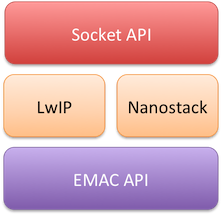
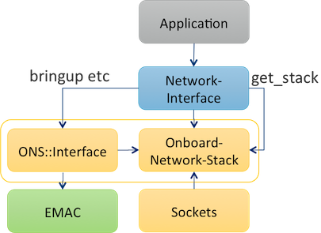

Ethernet MAC (EMAC) drivers
Emac API
This document describes how to port and test an Ethernet MAC (EMAC) driver to Mbed OS.
The scope of this document is limited to Ethernet (IEEE 802.3) or Ethernet-like devices, such as Wi-Fi (IEEE 802.11), where the device presents a MAC interface to send and receive frames, and one of the onboard network stacks that runs on Mbed OS on the host processor uses this.
(If the device has an off-board network stack, a driver needs to implement NetworkStack directly instead to pass network calls to the offboard stack).
Abstractions
EMAC driver
The EMAC interface abstracts network stacks and drivers and easily permits multiple instances. The key API classes are:
NetworkInterface- an Mbed OS network interface of any type.NetworkStack- an Mbed OS network stack of any type (may be off-board).OnboardNetworkStack- an onboard network stack.EMAC- an Ethernet MAC device driver.EMACMemoryManager- a memory manager used to pass data between driver and stack.EMACInterface- aNetworkInterfacethat uses anEMACdriver and anOnboardNetworkStack.
The EMAC driver core
The first step in the port is to create a driver class that you can instantiate to control your device. You must derive this class from the EMAC class. A network stack (or test framework) uses this API to control your driver.
The EMAC-derived driver would normally be installed in features/netsocket/emac-drivers, often in a TARGET_XXX directory.
Class EMAC is entirely abstract - you need to implement about a dozen calls to activate the driver, send and receive packets and perform other control and information functions.
There are also callback registration functions for upcalls from the driver - the stack can register callback functions for packet reception and link status changes.
Initialization steps
The EMAC driver class is instantiated during the creation of the network interface. When the network interface is brought up, the network stack powers the EMAC driver.
Steps that the network stack uses to power the EMAC driver:
- The network stack configures the EMAC memory manager class reference for the driver.
- The network stack sets the link input and state callbacks.
- The network stack calls the driver's power up function.
- The network stack reads the MTU and hardware MAC address sizes from the driver.
- The network stack queries the hardware MAC address from the driver. The driver is allowed to respond a failure.
- The hardware MAC address is written to the driver from the network stack.
- If the driver does not provide an address on the read call, the network stack chooses the address from the central system configuration and writes that to driver.
Optional steps:
- The network stack might query the interface name from the driver.
- The network stack might configure multicast filtering.
- The driver can either support multicast filtering or provide all frames.
- The network stack might query for the memory buffer align preference from the driver.
- The network stack is not required to use the alignment for the memory buffers on link out.
The EMAC memory manager
The Ethernet MAC memory manager class provides abstracted memory interface toward memory modules used in different network stacks. For the send and receive paths, data is transferred in memory buffers controlled through an EMACMemoryManager object. The network stack using an EMAC driver provides it with a reference to the memory manager in use before powering up - this is constant as long as the EMAC is powered.
Memory buffer chains store the data on the memory interface. The data passed in either direction either may be contiguous (a single-buffer chain) or may consist of multiple buffers. You can chain the buffers using a singly linked list.
On the output call, the EMAC driver is given ownership of a buffer chain - it must free the chain when it has finished with the data. The data may or may not be contiguous. A driver can express alignment preferences for outgoing data, but the network stack is not required to meet these preferences, so a driver relying on alignment may need a slow path that copies data into an aligned (or contiguous) buffer.
For reception, the EMAC driver must allocate memory from the EMACMemoryManager to store the received packets - this is then passed to the link input callback, which frees it. By preference, you should allocate this memory using the pool, but if contiguous memory is necessary, you can allocate it from the heap.
EthernetInterface
If your driver is a pure Ethernet driver, no further implementation is necessary. The class EthernetInterface can use any EMAC driver to provide an Mbed OS NetworkInterface:
MyEMAC my_emac(params);
EthernetInterface net(&my_emac);
net.connect();
This attaches the default network stack (usually LWIP - the other alternative is Nanostack) to the specified EMAC driver, and provides all the NetworkInterface and NetworkStack APIs.
Being the default EMAC or EthernetInterface
To make your EMAC the default for applications, define the static function EMAC::get_default_instance() to return an instance of your EMAC:
MBED_WEAK EMAC &EMAC::get_default_instance()
{
static MyEMAC my_emac(params);
return &my_emac;
}
This permits this example application code to work:
EthernetInterface net; // uses EMAC::get_default_instance()
net.connect();
A target label usually gates this definition. As target code, your definition of EMAC::get_default_instance() must be weak - this permits application code to override it.
Wi-Fi interfaces
As a Wi-Fi interface, a little more work is necessary - at a minimum, you need to implement the extra configuration calls in WiFiInterface. This is because the network stacks and EMAC APIs only relate to the Ethernet-like data path - they have no knowledge of any other configuration mechanisms and assume they are already set up.
To do this, create a C++ class that inherits from both WiFiInterface and EMACInterface. The EMACInterface is a helper class that implements all the core NetworkInterface functionality for you. You then need to implement the extra WiFiInterface configuration methods.
For reference, EthernetInterface also derives from EMACInterface but has no extra code because no extra configuration is necessary.
You don't usually directly expose the EMAC class of a Wi-fi driver - it is not usually declared as EMAC::get_default_instance, but you would pass it to the constructor of your base EMACInterface. This then makes it visible using the get_emac method. This is for test purposes, meaning the test framework can do:
MyWiFiInterface net;
net.set_credentials();
EMAC &emac = net.get_emac();
do_emac_test(emac);
This must work in your driver - it must be possible to power up and use the built-in EMAC directly without the NetworkInterface::connect() method being invoked, as long as the credentials have been set. This structure comes naturally if you use the default EMACInterface::connect() implementation.
Note also that your constructor must allow the network stack to be specified using the same form as EthernetInterface:
MyWiFiInterface(OnboardNetworkStack &stack = OnboardNetworkStack::get_default_instance());
OnboardNetworkStack
The precise details of the OnboardNetworkStack API should not concern an EMAC driver writer - it provides the mechanism to bind a driver to a stack, and the APIs needed to implement a NetworkInterface, but this is handled by EMACInterface, either as a base class of your own XXXInterface or as the base of EthernetInterface.
DEVICE_EMAC
At present, as an interim measure, targets providing EMAC::get_default_instance() should add "EMAC" in device_has in their targets.json. This activates network tests in CI builds.
This is subject to change, but is necessary in lieu of the previous typical behavior of gating tests on FEATURE_LWIP.
Tuning memory allocations
Depending on its use of pool and heap memory and other factors, a driver might want to tune the configuration of particular network stacks. You can do this using the mbed_lib.json of each network stack, using their target_overrides section.
Testing
The Mbed OS tree contains Greentea-based tests that exercise the EMAC API directly, and more general socket tests.
For general Greentea information, please see the Greentea section.
EMAC tests are in the Mbed OS tree under the TESTS/network/emac directory.
Greentea socket tests are in the Mbed OS tree under the TESTS/network/emac directory. Please see the instructions on how to run EMAC tests from the Mbed OS repository.
The driver should also be exercised with real-world examples, such as the Arm Mbed Client example.
The driver should also be tested with both network stacks available in Mbed OS, as they use the driver somewhat differently - try with the JSON option nsapi.default-stack set to each of LWIP and NANOSTACK.
Nanostack is IPv6 only. IPv6 operation should also be tested with LWIP because this is likely to reveal problems with multicast filtering that IPv4 or Nanostack may not spot. Please see the Network Socket test plan for instructions how to run Mbed OS socket tests.